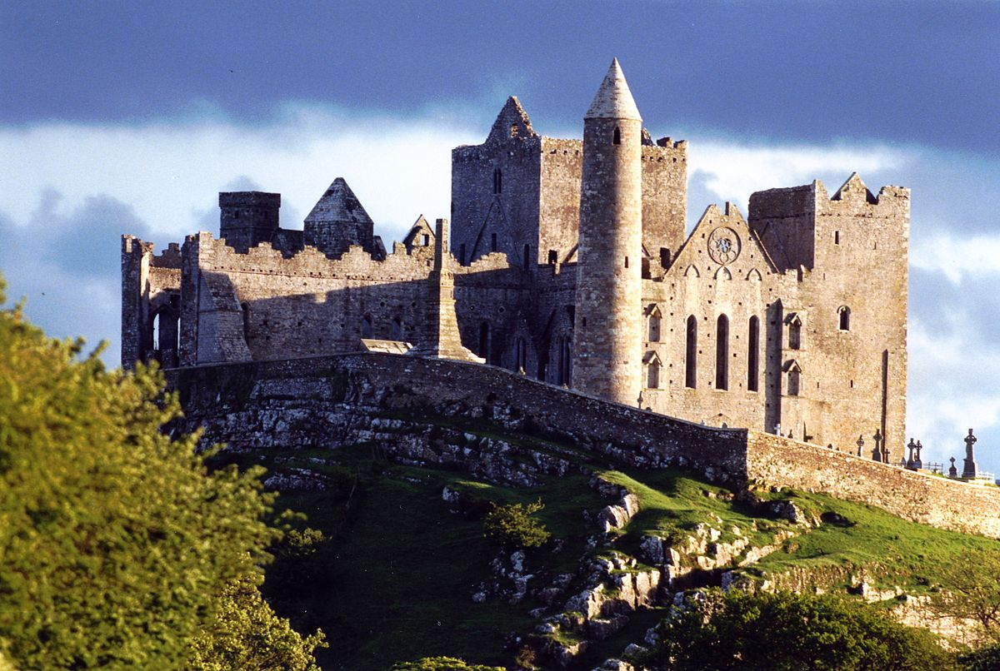
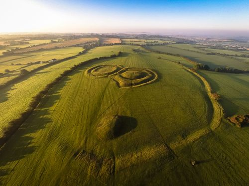
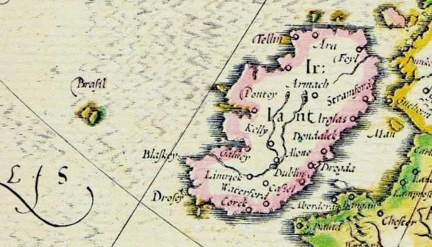

The Places
Newgrange

Newgrange is a 5,200 year old passage tomb located in the Boyne Valley in Ireland's Ancient East.
A passage measuring 19 meters (21 yards) leads into a chamber with 3 alcoves. The passage and chamber are aligned with the rising sun at the Winter Solstice.
Newgrange is surrounded by 97 large stones called kerbstones some of which are engraved with megalithic art; the most striking is the entrance stone.
The Rock of Cashel
Founded in the 12th century, The Rock of Cashel, also known as Cashel of the Kings and St. Patrick's Rock, is a historic medieval site located at Cashel, County Tipperary, Ireland.
The Hill of Tara
The Hill of Tara, located near the River Boyne, is an archaeological complex that runs between Navan and Dunshaughlin in County Meath, Ireland.
It contains a number of ancient monuments and, according to tradition, was the seat of the High King of Ireland.
More Information
Hy-Brasil: The Legendary Phantom Island of Ireland
Brasil, also known as Hy-Brasil or several other variants, is a phantom island said to lie in the Atlantic Ocean west of Ireland. Irish myths described it as cloaked in mist except for one day every seven years, when it becomes visible but still cannot be reached. is this island really myth? or could there have once been such an island which has since been swallowed by the sea?
More Information